Introduction au Deep Learning#
Objectifs de ce chapitre#
À la fin de ce chapitre, vous saurez :
Positionner le deep learning par rapport au machine learning classique (ce qui change, ce qui reste pareil).
Comprendre le principe de fonctionnement d’un réseau de neurones (neurone, couches, propagation, fonctions d’activation).
Distinguer les grandes architectures :
Réseaux convolutionnels (CNN) — pour les images.
Réseaux récurrents (RNN) — pour les séquences et les séries temporelles.
Transformers — l’architecture qui a révolutionné le NLP et donné naissance aux LLM (GPT, Claude, Mistral…).
Ce chapitre est une introduction « culture générale ». On ne va pas coder de réseau de neurones — c’est un sujet qui demande une formation dédiée (PyTorch, TensorFlow). L’objectif est que vous compreniez de quoi on parle quand on dit « deep learning », « CNN », « transformer », « LLM » — et que vous sachiez quand ces technologies sont pertinentes par rapport au ML classique qu’on a vu jusqu’ici.
Positionnement — AI, ML, DL, LLM… qui est qui ?#
Le deep learning n’est pas « à côté » du machine learning — il est dedans. La hiérarchie est la suivante :
Intelligence Artificielle (AI) — le champ le plus large : toute technique qui permet à une machine de « simuler » une forme d’intelligence.
Machine Learning (ML) — une branche de l’AI : la machine apprend à partir de données, au lieu d’être programmée explicitement.
Deep Learning (DL) — une branche du ML : on utilise des réseaux de neurones avec beaucoup de couches (d’où « deep » = profond).
IA Générative — une branche du DL : le modèle génère du contenu (texte, images, code, musique…).
LLM (Large Language Models) — des modèles de langage très grands (GPT, Claude, Mistral, Llama…).
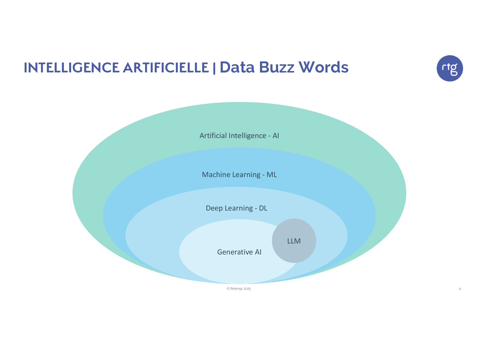
À retenir : tout ce qu’on a appris dans ce cours (arbres de décision, Random Forest, XGBoost, feature engineering, pipelines…) est du ML classique. Le deep learning est une extension du ML, pas un remplacement. Sur les données tabulaires (tableaux avec des colonnes), le ML classique (XGBoost, LightGBM) reste souvent supérieur au deep learning. Le DL brille sur les données non structurées : images, texte, audio, vidéo.
Les réseaux de neurones#
Le neurone artificiel — la brique de base#
L’idée originale vient d’une analogie biologique (Warren McCulloch et Walter Pitts, 1943) :
Neurone biologique :
Les dendrites captent des signaux (neurotransmetteurs) provenant d’autres neurones.
Les signaux s’accumulent dans le noyau.
Si l’accumulation dépasse un certain seuil, un message est envoyé via l”axone vers d’autres neurones.
Neurone artificiel — la même chose, en maths :
Entrées : des nombres \(X_1, X_2, \dots, X_n\) (les features, ou les sorties d’autres neurones).
Poids : chaque entrée est multipliée par un poids (un coefficient) \(w_1, w_2, \dots, w_n\).
Somme pondérée : \(z = w_1 X_1 + w_2 X_2 + \dots + w_n X_n + b\) (le biais \(b\) est un offset).
Fonction d’activation : on applique une fonction \(f\) au résultat → \(Y = f(z)\).
Sortie : \(Y\) est envoyé aux neurones de la couche suivante (ou est la prédiction finale).
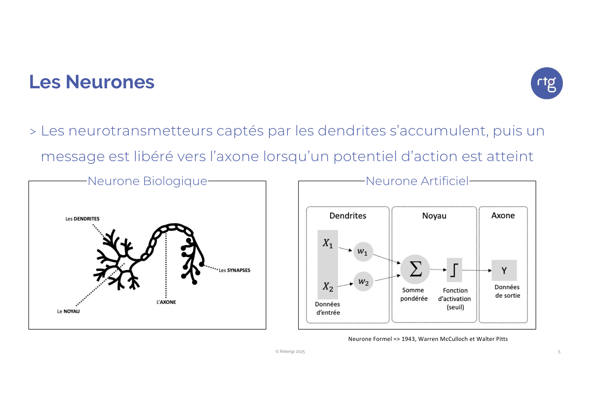
En une phrase : un neurone artificiel, c’est une régression linéaire (\(z = \sum w_i X_i + b\)) suivie d’une fonction non-linéaire (l’activation). C’est tout. Un réseau de neurones, c’est un empilement de milliers de ces briques.
Le perceptron — le premier réseau (1957)#
Frank Rosenblatt crée le perceptron en 1957 : un neurone unique, muni d’une règle d’apprentissage qui ajuste automatiquement les poids.
C’est un classifieur linéaire : il trace un hyperplan (une droite en 2D) qui sépare deux classes — exactement comme la régression logistique.
Limite majeure : il ne peut résoudre que des problèmes linéairement séparables. Le fameux problème du XOR (ou exclusif) est impossible avec un seul neurone.
Solution : empiler plusieurs couches de neurones → le perceptron multicouche (MLP).
Le réseau de neurones dense (fully connected)#
Un réseau de neurones, c’est un empilement de couches de neurones :
Couche d’entrée : reçoit les features brutes du dataset (ex : les 784 pixels de MNIST).
Couches cachées (hidden layers) : une ou plusieurs couches intermédiaires. Chaque neurone est connecté à tous les neurones de la couche précédente (d’où le nom fully connected ou dense). C’est ici que le réseau « apprend » des représentations de plus en plus abstraites.
Couche de sortie : produit la prédiction finale (une probabilité par classe en classification, ou un nombre en régression).
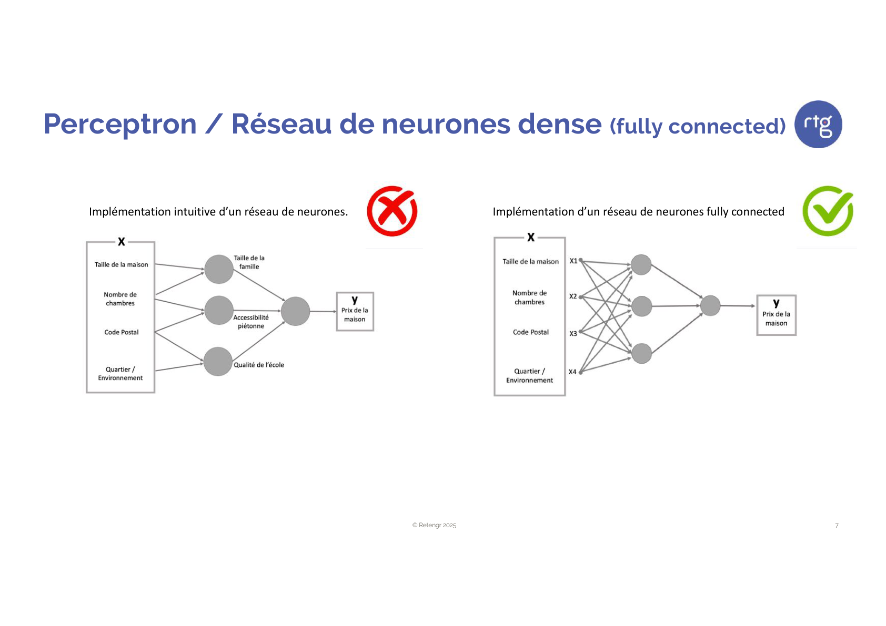
Idée clé : on ne choisit pas ce que les couches cachées apprennent. On donne juste les entrées et les sorties attendues, et l’algorithme d’apprentissage trouve tout seul les bons poids pour que les couches intermédiaires capturent les patterns utiles. C’est ce qui distingue le deep learning du feature engineering manuel : le réseau fabrique ses propres features.
L’apprentissage : propagation avant et arrière#
L’entraînement d’un réseau de neurones suit un cycle en 3 étapes, répété des milliers de fois :
1. Propagation avant (forward propagation) : on envoie un exemple dans le réseau, couche par couche, de l’entrée à la sortie. Chaque neurone fait sa somme pondérée + activation. À la fin, on obtient une prédiction.
2. Calcul de l’erreur (loss function) : on compare la prédiction à la vraie réponse. L’écart est mesuré par une fonction de perte (la MSE en régression, la cross-entropy en classification).
3. Propagation arrière (backpropagation) : c’est l’étape clé. L’algorithme calcule, pour chaque poids du réseau, « de combien l’erreur changerait si on modifiait ce poids un peu ? ». C’est le gradient. Puis il ajuste les poids dans la direction qui réduit l’erreur. C’est la descente de gradient.
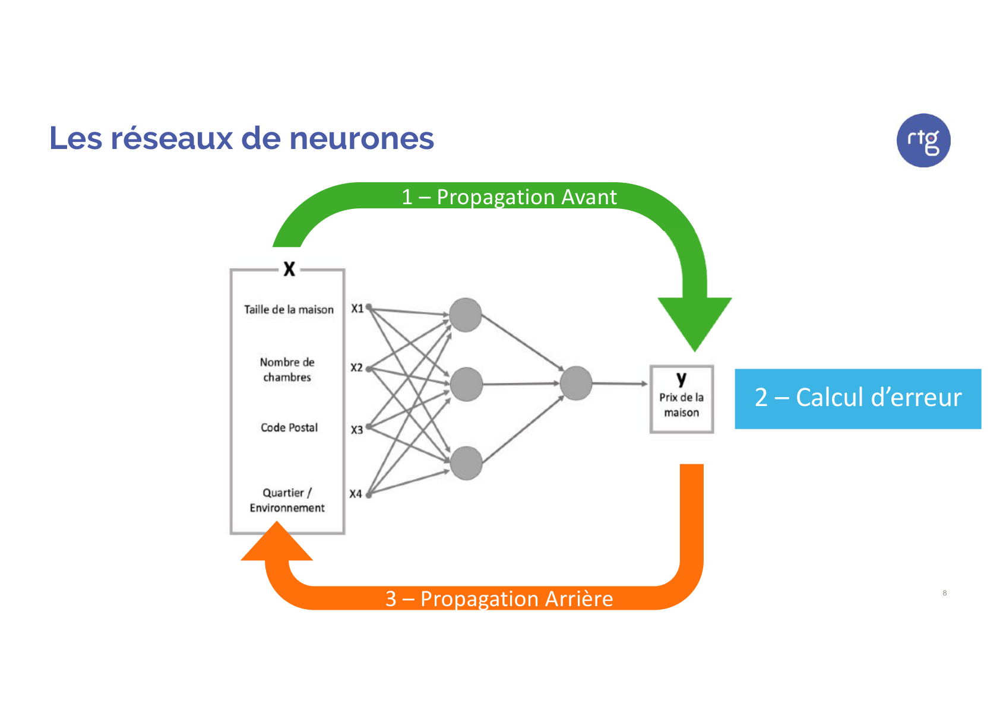
L’analogie à garder en tête : imagine un randonneur perdu dans le brouillard sur une colline. Il ne voit pas le paysage, mais il peut sentir la pente sous ses pieds. À chaque pas, il descend un peu dans la direction la plus pentue. C’est exactement ce que fait la descente de gradient : on ne « voit » pas la solution, mais on suit la pente de l’erreur vers le minimum.
Les fonctions d’activation — pourquoi la non-linéarité est indispensable#
Le problème : si on empile des couches de neurones sans fonction d’activation non-linéaire, le résultat est toujours linéaire. Peu importe le nombre de couches, le réseau global est équivalent à une seule couche — il ne peut tracer que des droites, pas des courbes.
La solution : insérer une fonction d’activation non-linéaire après chaque somme pondérée. C’est ce qui permet au réseau de capturer des relations complexes et d’aller bien au-delà de ce qu’un modèle linéaire peut faire.
Les 3 fonctions classiques#
Fonction |
Formule |
Plage de sortie |
Quand l’utiliser |
|---|---|---|---|
Sigmoïde |
\(g(z) = \frac{1}{1 + e^{-z}}\) |
[0, 1] |
Couche de sortie pour classification binaire (probabilité). Rarement en couches cachées (problème de vanishing gradient). |
Tanh |
\(g(z) = \frac{e^z - e^{-z}}{e^z + e^{-z}}\) |
[-1, 1] |
Comme la sigmoïde mais centrée sur 0. Un peu meilleure en couches cachées, mais même problème de gradient. |
ReLU |
\(g(z) = \max(0, z)\) |
[0, +∞) |
Le choix par défaut pour les couches cachées. Simple, rapide, résout le problème de vanishing gradient. |
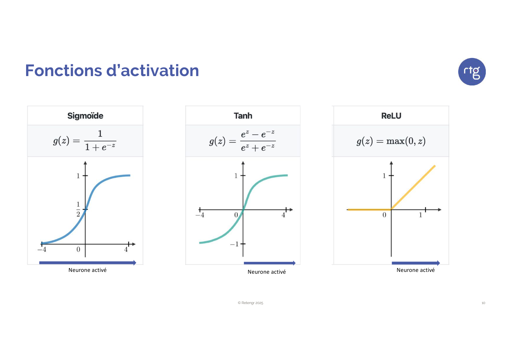
Pourquoi ReLU domine-t-il ? C’est la fonction la plus simple (\(\max(0, z)\)) mais aussi la plus efficace en pratique : elle est rapide à calculer, rapide à dériver, et ne souffre pas du problème de « gradient qui disparaît » qui plombe les sigmoïdes et tanh dans les réseaux profonds. Quasiment tous les réseaux modernes utilisent ReLU (ou ses variantes : LeakyReLU, GeLU, SiLU).
Expérimentez vous-même !
Le Playground TensorFlow permet de visualiser en temps réel l’apprentissage d’un réseau de neurones : ajoutez des couches, changez les fonctions d’activation, observez comment la frontière de décision évolue.
Les réseaux de neurones convolutionnels (CNN)#
Pourquoi un réseau spécifique pour les images ?#
Un réseau dense « classique » traite chaque pixel comme une feature indépendante. Pour une image 28×28, ça donne 784 entrées — gérable. Mais pour une photo HD (1920×1080×3 couleurs), ça fait 6 millions d’entrées, chacune connectée à chaque neurone de la première couche cachée → des milliards de poids à apprendre. C’est impossible.
De plus, un réseau dense ne « comprend » pas la structure spatiale de l’image. Le pixel en haut à gauche et son voisin juste à droite sont traités de la même façon que deux pixels aux extrêmes opposés de l’image.
L’idée du CNN : au lieu de connecter chaque pixel à chaque neurone, on fait glisser un petit filtre (par exemple 3×3 ou 5×5) sur toute l’image. Ce filtre détecte un pattern local (un bord, une texture, un coin…). Les mêmes poids sont réutilisés partout dans l’image. Résultat : beaucoup moins de poids à apprendre, et le réseau est naturellement sensible aux structures spatiales.
Un peu d’histoire : de LeNet à ResNet#
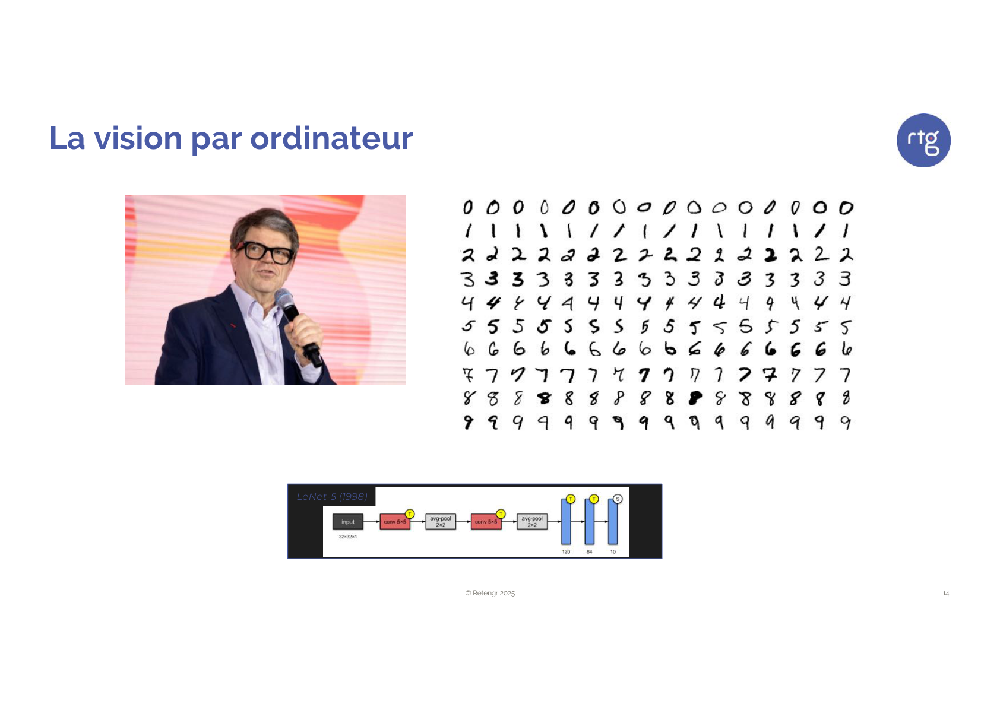
1998 — LeNet-5 (Yann LeCun) : premier CNN fonctionnel, appliqué à la reconnaissance de chiffres manuscrits (MNIST). 2 couches de convolution, 60 000 paramètres.
2012 — AlexNet : premier CNN à gagner le concours ILSVRC (ImageNet) avec un score de 16% d’erreur (contre 26% pour les méthodes classiques). C’est le moment fondateur du deep learning moderne — le monde réalise que les réseaux profonds + GPU changent tout.
2013–2015 — VGG, GoogLeNet, ResNet : les réseaux deviennent de plus en plus profonds (VGG = 19 couches, ResNet = 152 couches) et l’erreur descend à 3,6% — en dessous de la performance humaine (~5%).
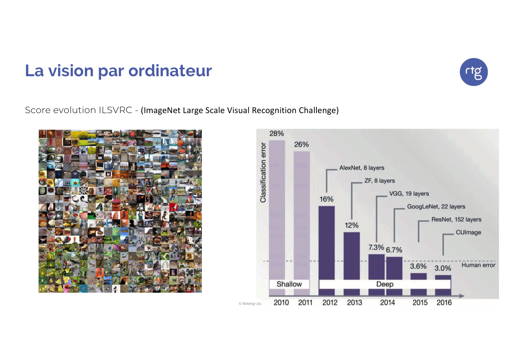
La leçon clé : en 4 ans (2012→2016), les CNN sont passés de « curiosité académique » à « surhumains en reconnaissance d’images ». C’est cette progression fulgurante qui a déclenché l’engouement mondial pour le deep learning.
Ce qu’on peut faire avec les CNN aujourd’hui#
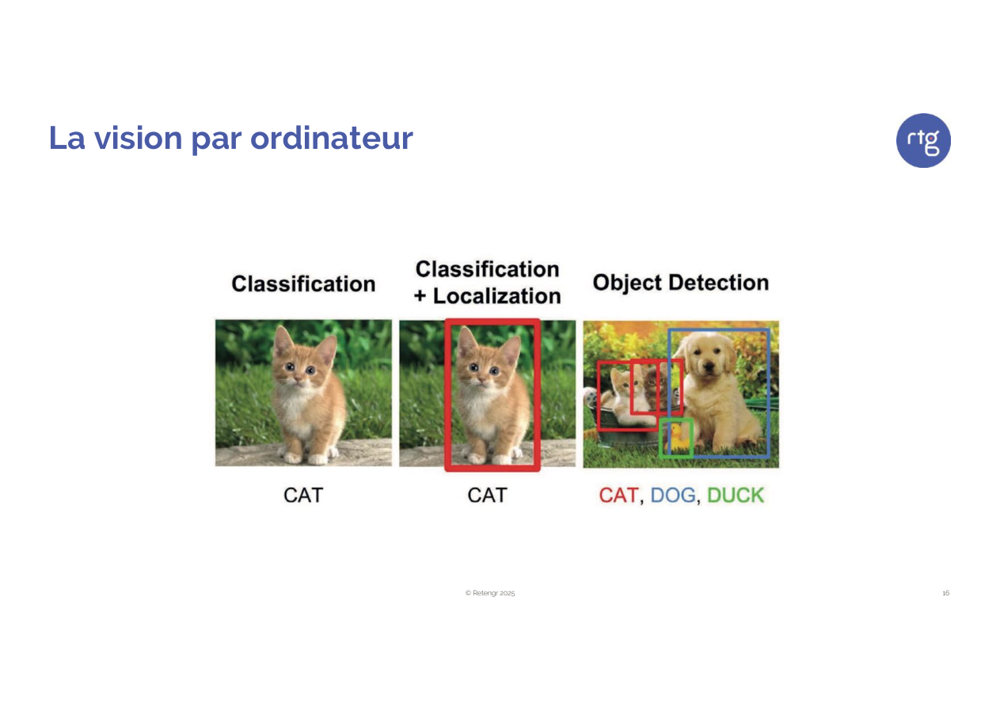
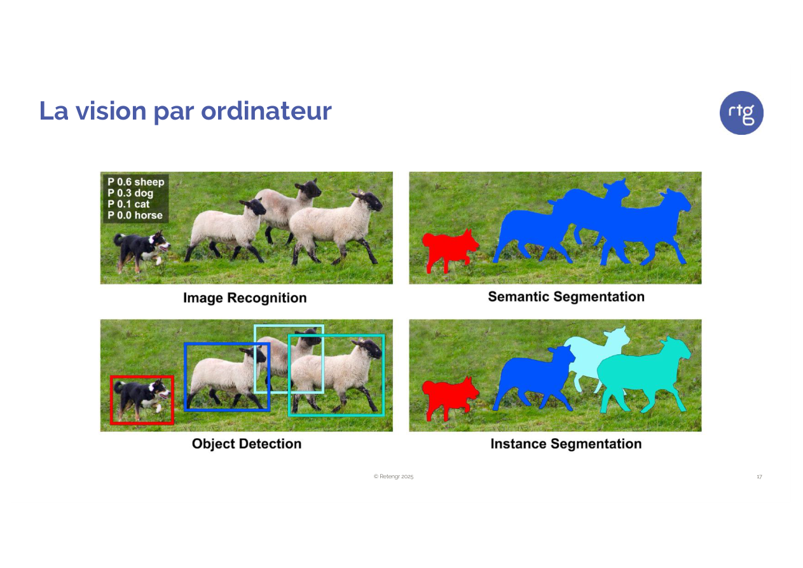
Tâche |
Description |
Exemple d’usage |
|---|---|---|
Classification |
« Cette image contient-elle un chat ? » |
Reconnaissance de produits, diagnostic médical |
Classification + localisation |
« Il y a un chat, et il est ici » (boîte englobante) |
Contrôle qualité industriel |
Object Detection |
Trouver tous les objets dans l’image + les nommer |
Voitures autonomes, vidéosurveillance |
Segmentation sémantique |
Colorier chaque pixel selon sa classe |
Imagerie médicale (détourer une tumeur) |
Segmentation d’instance |
Comme la segmentation, mais distingue chaque instance |
Comptage de cellules en bio |
Architecture type d’un CNN#
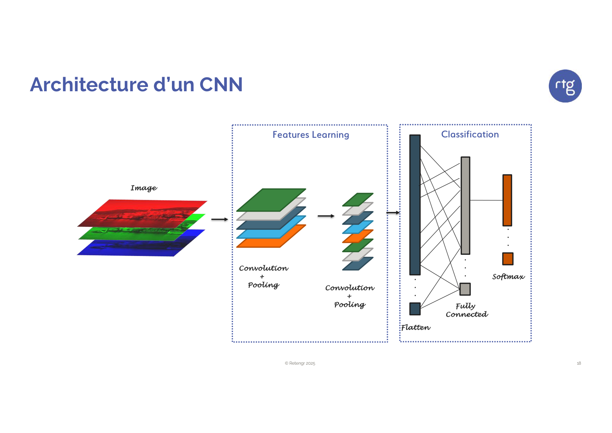
Un CNN est composé de deux parties :
Feature Learning (extraction automatique de features) :
Couches de convolution : des filtres glissent sur l’image et détectent des patterns (bords → textures → formes → objets). Plus on avance dans le réseau, plus les patterns sont abstraits.
Couches de pooling : réduisent la taille spatiale (par exemple en gardant le maximum dans chaque zone 2×2). Ça réduit le calcul et rend le réseau tolérant aux petits décalages.
Classification (prédiction finale) :
Les feature maps sont aplaties (flatten) en un vecteur 1D.
Ce vecteur passe dans un réseau dense classique (fully connected).
La dernière couche utilise softmax pour donner une probabilité par classe.
L’intuition à retenir : le CNN fait automatiquement le feature engineering que vous feriez à la main en traitement d’image classique. Les premières couches détectent des bords (horizontaux, verticaux, diagonaux), les suivantes combinent ces bords en textures, puis en formes (yeux, pattes, roues), puis en objets (chat, voiture, chien). Tout ça est appris à partir des données, pas programmé.
Les réseaux de neurones récurrents (RNN)#
Le problème des séquences#
Les réseaux denses et les CNN traitent chaque entrée indépendamment : l’image 1 n’a rien à voir avec l’image 2. Mais beaucoup de données sont séquentielles — l’ordre compte :
Texte : « le chat mange la souris » ≠ « la souris mange le chat ». Les mots ont un sens qui dépend du contexte.
Séries temporelles : la température de demain dépend de celle d’aujourd’hui et d’hier.
Audio/parole : un phonème se comprend dans le contexte des phonèmes précédents.
Vidéo : une image se comprend par rapport aux images précédentes.
Le problème : un réseau dense traite chaque entrée comme un « paquet isolé ». Il n’a aucune mémoire de ce qu’il a vu avant. Pour les séquences, c’est rédhibitoire.
L’idée du RNN : ajouter de la mémoire#
Un RNN (Recurrent Neural Network) ajoute une notion de mémoire : à chaque pas de temps, le réseau reçoit non seulement l’entrée courante, mais aussi un état caché (hidden state) qui résume tout ce qu’il a vu auparavant.
L’analogie : imagine que tu lis un livre phrase par phrase. À chaque nouvelle phrase, tu ne « réinitialises » pas ta compréhension — tu gardes en tête le contexte de ce que tu as lu avant. Le RNN fait pareil : il maintient un « résumé courant » qui évolue à chaque mot/pas de temps.
Les architectures RNN#
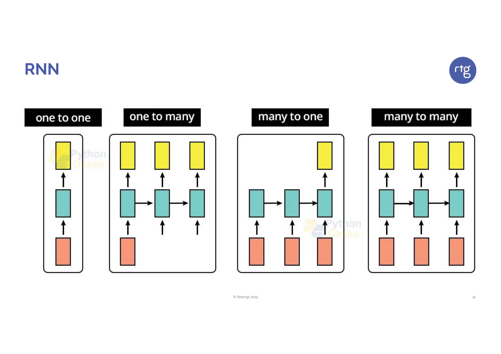
Architecture |
Entrée → Sortie |
Exemple |
|---|---|---|
one-to-one |
1 entrée → 1 sortie |
Réseau dense classique (pas vraiment un RNN) |
one-to-many |
1 entrée → séquence |
Génération de texte à partir d’une image (captioning) |
many-to-one |
Séquence → 1 sortie |
Analyse de sentiment (« ce tweet est positif ou négatif ? ») |
many-to-many |
Séquence → séquence |
Traduction automatique, sous-titrage vidéo |
Limites des RNN#
Mémoire à court terme : en pratique, les RNN simples « oublient » les informations anciennes après quelques dizaines de pas de temps. Des variantes comme LSTM (Long Short-Term Memory) et GRU corrigent partiellement ce problème.
Entraînement séquentiel : chaque pas de temps dépend du précédent → impossible de paralléliser → très lent sur les GPU.
Largement remplacés par les Transformers depuis 2017, qui n’ont pas ces limitations.
Le traitement du langage naturel (NLP)#
C’est quoi le NLP ?#
Le NLP (Natural Language Processing — Traitement Automatique du Langage Naturel) est le domaine qui donne aux machines la capacité de comprendre et de générer du langage humain (écrit ou parlé). C’est l’interface entre la linguistique et l’informatique.
Exemples de tâches NLP :
Classification de texte : spam/pas spam, analyse de sentiment, catégorisation de documents.
NER (Named Entity Recognition) : repérer les noms de personnes, lieux, entreprises dans un texte.
Traduction automatique : français → anglais, chinois → français…
Résumé automatique : condenser un article en quelques phrases.
Question-Answering : répondre à une question posée en langage naturel.
Génération de texte : écrire du texte (articles, code, emails, poésie…).
Le problème fondamental : comment représenter les mots ?#
Les algorithmes de ML ne comprennent que des nombres. Comment transformer le mot « chat » en un nombre exploitable ?
Étape 1 — L’encodage basique (insuffisant)#
One-hot encoding : chaque mot est représenté par un vecteur avec un seul 1 et le reste à 0.
Exemple : vocabulaire = {the, little, cat, and, dog}
Mot |
Vecteur |
|---|---|
the |
[1, 0, 0, 0, 0] |
little |
[0, 1, 0, 0, 0] |
cat |
[0, 0, 1, 0, 0] |
dog |
[0, 0, 0, 0, 1] |
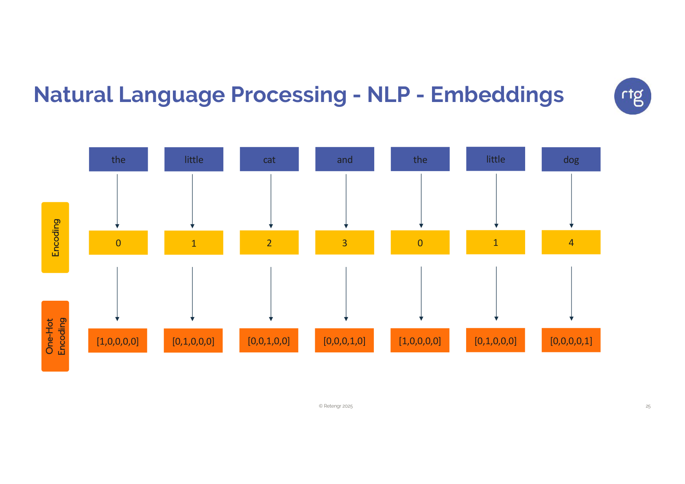
Problèmes :
Avec un vocabulaire de 100 000 mots, chaque vecteur fait 100 000 éléments → explosion de mémoire.
« chat » et « chaton » ont des vecteurs aussi différents que « chat » et « avion ». Aucune notion de similarité.
Étape 2 — Les embeddings (la vraie solution)#
Un embedding (plongement) transforme chaque mot en un vecteur dense de petite taille (typiquement 100 à 300 dimensions), appris à partir des données. Les mots qui apparaissent dans des contextes similaires obtiennent des vecteurs proches.
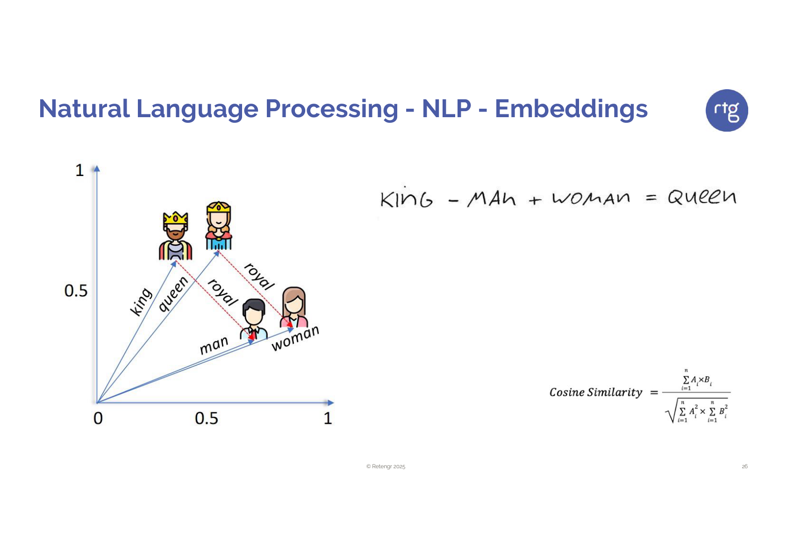
La propriété magique des embeddings :
\[\text{King} - \text{Man} + \text{Woman} \approx \text{Queen}\]Les vecteurs capturent des relations sémantiques sous forme d’arithmétique vectorielle. La direction « masculin → féminin » dans l’espace est la même pour King→Queen que pour Man→Woman.
Comment mesurer la similarité ? Avec la similarité cosinus : on mesure l’angle entre deux vecteurs. Angle petit → mots proches sémantiquement (ex : chat/chaton). Angle grand → mots éloignés (ex : chat/avion).
Outils célèbres pour les embeddings : Word2Vec (Google, 2013), GloVe (Stanford), FastText (Facebook).
Les Transformers — la révolution de 2017#
Pourquoi les Transformers ?#
Les RNN avaient deux défauts majeurs :
Mémoire limitée : ils « oublient » le début d’un texte long.
Pas parallélisables : chaque mot dépend du précédent → lent sur GPU.
En 2017, l’équipe de Google publie le papier « Attention is All You Need » (Vaswani et al.) et propose une architecture radicalement différente : le Transformer. Plus de récurrence, uniquement de l”attention.
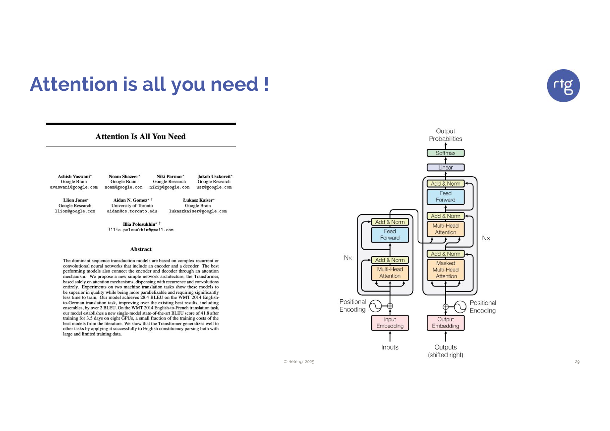
L’attention — l’idée clé#
L’analogie : quand vous lisez la phrase « La banque du fleuve était couverte de mousse », votre cerveau comprend que « banque » signifie « rive » (pas l’institution financière) grâce au contexte — les mots « fleuve » et « mousse ». Le mécanisme d”attention fait exactement ça : pour comprendre un mot, le modèle regarde tous les autres mots de la phrase et décide lesquels sont pertinents pour ce mot-là.
Avantage décisif sur les RNN :
Le Transformer peut « voir » toute la séquence d’un coup — pas besoin de la lire mot par mot. Le mot 1 peut directement « regarder » le mot 500.
Tout se calcule en parallèle → entraînement massivement accéléré sur GPU.
Les LLM — pourquoi « Large » ?#
Les modèles de langage basés sur les Transformers sont devenus extrêmement grands :
Aspect |
Ordres de grandeur |
|---|---|
Paramètres |
GPT-3 : 175 milliards. GPT-4 : estimé ~1 000 milliards. Claude : non communiqué. |
Données d’entraînement |
~500 milliards de mots (quasi tout l’internet accessible). |
Puissance de calcul |
Entraîner GPT-3 : ~5 millions de dollars, 5 mois sur 200 GPU haut de gamme. |
Infrastructure |
Jean Zay (supercalculateur CNRS, 2023) : 1 700 GPU. Azure AI (Microsoft) : 10 000 GPU + 285 000 CPU. |
Pourquoi c’est intéressant pour le data scientist ? Parce que ces modèles, une fois entraînés, sont réutilisables via des APIs ou du fine-tuning. Vous n’avez pas besoin de 200 GPU — vous utilisez le modèle de quelqu’un d’autre et vous l’adaptez à votre problème.
Les 3 familles de Transformers#
Famille |
Ce qu’elle fait bien |
Exemples |
|---|---|---|
Encoder-only |
Comprendre un texte (classification, NER, extraction d’info) |
BERT, RoBERTa, DistilBERT, DeBERTa, ELECTRA |
Encoder-Decoder |
Transformer un texte en un autre (traduction, résumé) |
T5, BART, M2M-100, BigBird |
Decoder-only |
Générer du texte à partir d’un prompt |
GPT-2/3/4, Claude, Mistral, Llama, Falcon |
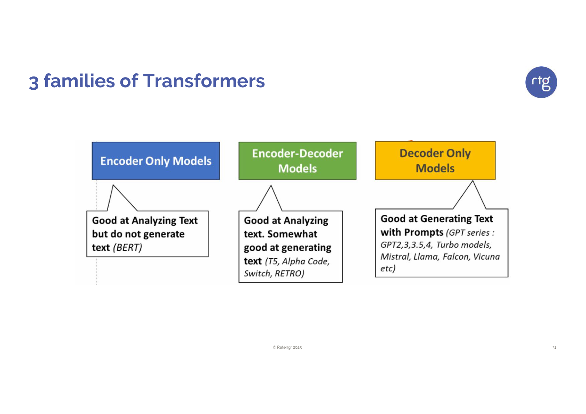
En langage courant :
Encoder = « je lis et je comprends ».
Decoder = « j’écris ».
Encoder-Decoder = « je lis, puis j’écris autre chose ».
Decoder-only = « tu me donnes le début, je continue ».
Modèles fermés, ouverts, et totalement ouverts#
Le paysage des LLM se divise aujourd’hui en trois catégories :
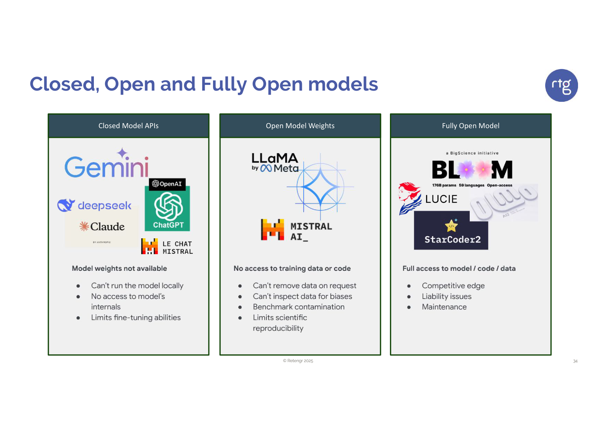
Catégorie |
Exemples |
Ce qu’on a accès |
|---|---|---|
Closed Model APIs |
GPT-4 (OpenAI), Claude (Anthropic), Gemini (Google), DeepSeek |
Accès uniquement via API. Pas les poids, pas le code, pas les données d’entraînement. Impossible de tourner le modèle en local. |
Open Model Weights |
Llama (Meta), Mistral (Mistral AI) |
Les poids sont publiés → on peut tourner le modèle en local, le fine-tuner. Mais les données et le code d’entraînement restent fermés. |
Fully Open Models |
BLOOM, StarCoder2, LUCIE |
Tout est ouvert : poids, code, et données d’entraînement. Reproductibilité scientifique maximale. |
Pourquoi ça compte ?
Modèle fermé : simple d’utilisation (API), mais dépendance totale au fournisseur. Pas de fine-tuning avancé possible.
Poids ouverts : on peut tout adapter, mais on ne sait pas exactement sur quoi le modèle a été entraîné (biais potentiels, contamination de benchmarks).
Totalement ouvert : le graal pour la recherche et la transparence, mais rares (très coûteux à produire).
🎯 Pour résumer — le deep learning en contexte#
Quand utiliser le deep learning ?#
Type de données |
ML classique ou DL ? |
Pourquoi ? |
|---|---|---|
Données tabulaires (tableaux CSV) |
ML classique (XGBoost, LightGBM) |
Les arbres boostés sont encore état de l’art et beaucoup plus simples à utiliser. |
Images |
DL (CNN) |
Les CNN exploitent la structure spatiale que les modèles classiques ignorent. |
Texte |
DL (Transformers) |
Les embeddings + attention capturent le sens contextuel. |
Audio / Parole |
DL |
Spectrogrammes → CNN ou Transformers (Whisper, Wav2Vec). |
Vidéo |
DL |
Combinaisons CNN (spatial) + Transformers (temporel). |
Séries temporelles simples |
ML classique souvent suffisant |
XGBoost avec features temporelles bat souvent les RNN. |
Séries temporelles complexes |
DL (Transformers) |
Pour les très longues séquences multicanaux. |
Les avantages du deep learning#
✅ Feature engineering automatique : le réseau apprend ses propres features, pas besoin de les concevoir à la main.
✅ Performances inégalées sur images, texte, audio — les modèles deep learning sont état de l’art dans ces domaines.
✅ Transfer learning : on peut réutiliser un modèle pré-entraîné (ImageNet pour les images, BERT/GPT pour le texte) et l’adapter à son problème avec peu de données.
✅ Scalabilité : les performances s’améliorent avec plus de données et plus de calcul, presque sans plafond.
Les inconvénients#
⚠️ Nécessite beaucoup de données : un CNN pour la classification d’images a besoin de milliers d’exemples par classe (sauf avec le transfer learning).
⚠️ Coûteux en calcul : il faut souvent des GPU (voire des clusters de GPU) pour l’entraînement. Pas possible sur un laptop classique pour des problèmes réels.
⚠️ Boîte noire : l’interprétabilité est beaucoup plus difficile qu’avec un arbre de décision ou une régression logistique. C’est un vrai problème dans les domaines réglementés (santé, finance, justice).
⚠️ Plus d’overfitting : un réseau avec des millions de paramètres peut overfitter violemment si on n’a pas assez de données. Il faut des techniques de régularisation spécifiques (dropout, data augmentation, early stopping).
⚠️ Plus complexe à mettre en œuvre : choix de l’architecture, hyperparamètres nombreux (learning rate, batch size, nombre de couches, nombre de neurones par couche…), debugging plus difficile.
La règle d’or pour un data scientist#
Commence toujours par le ML classique. Si un XGBoost avec un bon feature engineering donne 95% de performance, tu n’as probablement pas besoin de deep learning. Passe au DL seulement quand :
Tes données sont non structurées (images, texte, audio) — le ML classique ne saura pas les traiter.
Tu as beaucoup de données (au moins des dizaines de milliers d’exemples).
Tu as accès à du GPU pour l’entraînement.
La performance du ML classique plafonne malgré tes efforts de feature engineering.
Le deep learning est un outil puissant, pas une solution universelle. L’art du data scientist, c’est de savoir quand il est nécessaire — et quand il ne l’est pas.
Pour aller plus loin#
Sujet |
Ressource recommandée |
|---|---|
Cours complet deep learning |
Deep Learning Specialization (Andrew Ng, Coursera) — le classique |
Pratique PyTorch |
PyTorch tutorials — officiel, bien fait |
Transformers en pratique |
Hugging Face Course — gratuit, très bien fait |
Playground CNN |
CNN Explainer — visualisation interactive |
Playground réseau de neurones |
|
Livre de référence |
Deep Learning (Goodfellow, Bengio, Courville) — disponible gratuitement en ligne |